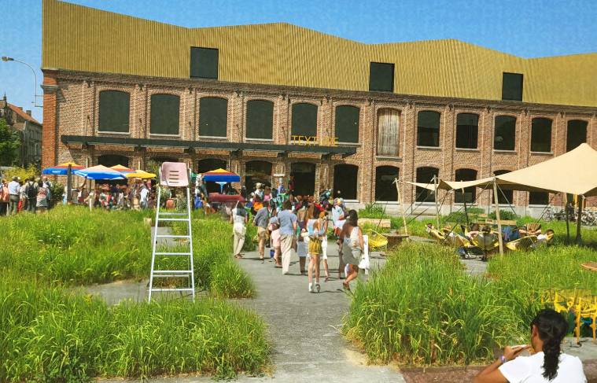

WHAT IS GOLDEN VOICES
It’s all about the Community, The individual, the people. Anyone who has a story to tell.
At Golden Voices we believe in the power of community, we want to platform individuals to help them express themselves. Wether you’re a student ho wants to leave their mark on the city, or a inhabitant of Kortrijk who wants to share their story. Your opinion is everything to us.
 For who is this ?
For who is this ?